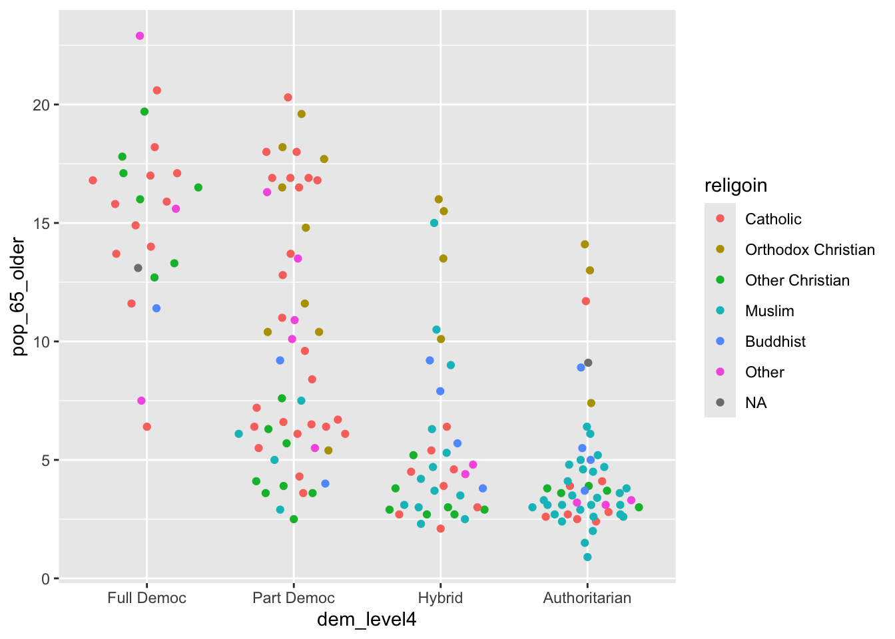
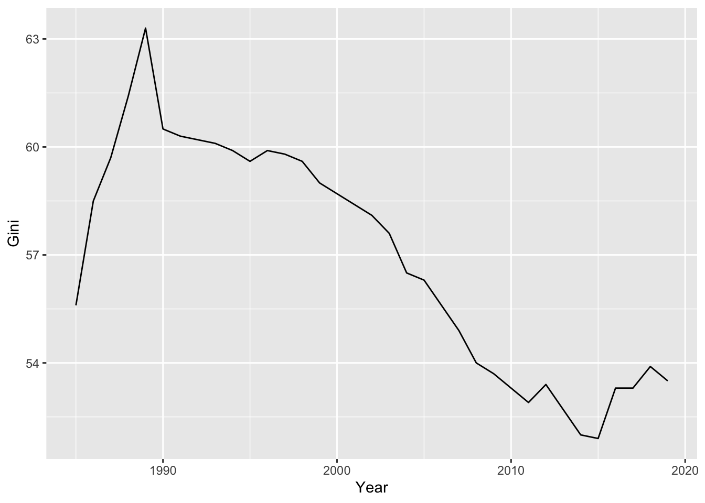
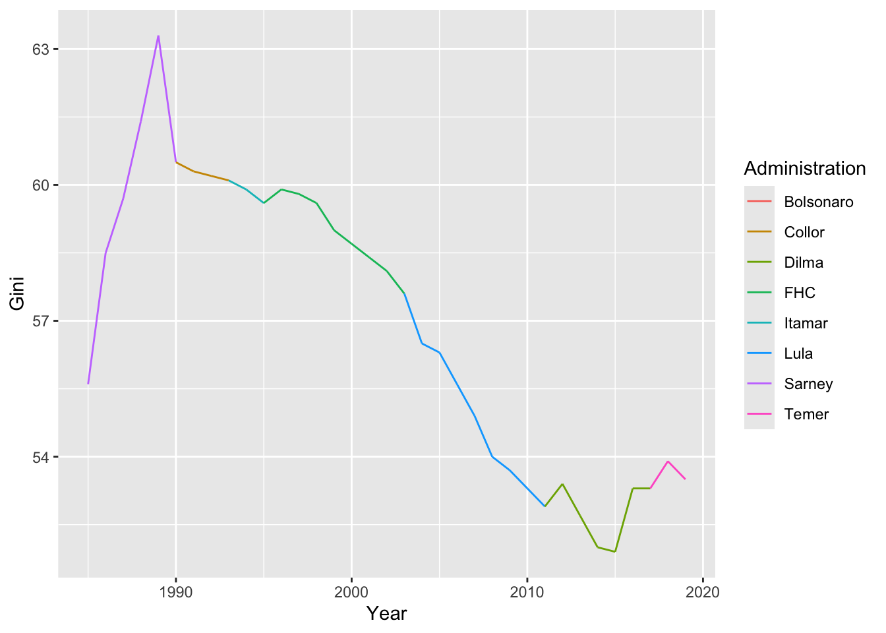

library(poliscidata)d <- states# reordena de modo decreciented$pot_policy <-reorder( d$pot_policy, d$pot_policy, function(x) -length(x))library(ggplot2)p <-ggplot(data = d,mapping =aes(x=pot_policy)) +geom_bar()p
Code
p +coord_polar()
Histograma
Code
library(ggplot2)# Creates the histogram of pop2010p <-ggplot(d, aes(pop2010))+# Adds the histogram geometry with 8 binsgeom_histogram(bins =8)# Draws the histogramp
Densidad
Code
library(ggplot2)# Creates the density plot of pop2010p <-ggplot(d, aes(pop2010))+# Adds the density geometrygeom_density()# Draws the density plotp
Distribución
Boxplot y Violin
Code
p <-ggplot(data = d,mapping =aes(x=unemploy, y=region,fill=region,group=region)) +geom_violin()+geom_boxplot(width=0.1)p
Lollipop
Code
library(ggplot2)# Creates a sorted table of abort_rank3tb <-sort(table(d$abort_rank3))# Converts it in a data.frame to be passed to the ggplot functiontb <-data.frame(tb)# Creates the lollipopp <-ggplot(tb, aes(y=Var1, x=Freq)) +# adds red dots to the plotgeom_point(color="red") +# Adds the segmentsgeom_segment( aes(y=Var1, yend=Var1, x=0, xend=Freq))# Draws the plotp
Treemap
A treemap is useful to represent proportions as areas or rectangles. The larger the area, the higher the frequency of a given category (represented by a rectangle). The main advantage of treemaps is that it allows to chart hierarchical data. Therefore, groups and subgroups within them can be visualized easily. Besides, treemaps allow to synthesize lots of data in relatively small space.
Code
# Loads the ggplot packagelibrary(ggplot2)# Loads the treemapify packagelibrary(treemapify)# Creates a sorted table of Marijuana lawstb <-sort(table(d$pot_policy))# Converts it in a data.frame to be passed to the ggplot functiontb <-data.frame(tb)# Creates the treemap using the geometry **geom_treemap()** from the package treemapify# Initially, sets up the graph with area, color (fill), and label p <-ggplot(tb, aes(area = Freq, fill = Var1, label=Var1)) +# Adds the treemap geometry to the graphgeom_treemap()# Draws (plots) the graphp
BeeSwarm
Code
w <- world# First of all, we need to load the packageslibrary(ggplot2) # For plottinglibrary(ggbeeswarm) # For the beeswarm # Then, we create the plot, the data is w, and the # variables: x=dem_level4 and y=pop_65_older, # and fill=religoin (for color)p <-ggplot(data = w,mapping =aes(x=dem_level4, y=pop_65_older, color=religoin)) # We add the geometry with geom_quasirandom()p <- p +geom_quasirandom(size=1.5)# Now, we change the color scale, set a title for the# legend and p <- p +scale_color_brewer(palette ="Dark2", name="Religion")+theme_light() # Now, we need to add a title, the source, and the label for the axesp <- p +labs(title="Old Age, Regime Type, and Religion",caption="Source: Package poliscidata.")+xlab("Political Regime")+ylab("65 years old or more (%)")# Plot the graphp

Ridge Plot
Code
# Loads the required librarieslibrary(ggplot2)library(ggridges)# Creates the chart with the desired variablesp <-ggplot(w,aes(x=frac_eth, y=religoin, fill=religoin))# Adds the geometry to paint the ridgesp <- p +geom_density_ridges()# Plots the resultsp
Raincloud Chart
Code
# First of all, we need to load the packageslibrary(ggplot2) # For plottinglibrary(ggridges) # For the geometry# Then, we create the plot, the data is w, and the # variables: y=dem_level4 and x=pop_65_older, # and fill=dem_level4 (for color)p <-ggplot(w,aes(y = dem_level4, x = pop_65_older, fill = dem_level4)) # Now we add the geometries p <- p +geom_density_ridges(jittered_points =TRUE, # Include dotsposition ="raincloud", # Dots belowalpha=0.6, # Color transparencyquantile_lines =TRUE) # 25, 50, and 75 quantiles# Generates the chartp
Asociación
Diagrama de dispersión
Conexión
Red
Code
di <-read.delim("https://www.dropbox.com/s/r8309gzg3rymajr/Visitas_Dilma_redux.csv?dl=1", sep=";", dec=",")di <-unique(di[,c("NOM_O","NOM_D","FREQ","VISITS")])names(di) <-c("Origin","Destination","Travels","Visits")# Loads the necessary packageslibrary(ggplot2)library(ggnetwork)# Convert the data.frame in a network# layoutn <-ggnetwork(di)# Creates the network only with links (edges)p <-ggplot(n, aes(x = x, y = y, xend = xend, yend = yend)) +geom_edges(aes(size=Travels),color ="red3", # Color of links/edgesalpha=0.1, # transparencycurvature =0.25) # Curvature of links# Now, we add nodes/points to the grathp <- p +geom_nodes(aes(size=Visits), color="red3")# Now, the names of the visited citiesp <- p +geom_nodetext_repel(aes(label = vertex.names))# Removes the theme and the legendp <- p +theme_blank() +theme(legend.position ="none")# Plots the networkp
Tiempo / Flujo
Línea
Code
# Prepares the plotp <-ggplot(br, aes(x=Year, y=Gini))+geom_line()# Adds the labelsp <- p +labs(title="Inequality in Brazil (1985-2019)", subtitle ="Gini Index for Income Inequality.",caption ="World Development Indicators.")# Plots the resultsp

Connected scatterplot
Code
# Loads the librarieslibrary(ggplot2)library(ggrepel)# Creates the graphp <-ggplot(brs, aes(x=Year, y=Gini,fill=Administration))# Adds the line segments for each administrationp <- p +geom_segment(aes(x=x1,xend=xend,y=y1,yend=yend,color=Administration))# Changes the colorp <- p +scale_color_brewer(palette ="Dark2")# Adds a titlep <- p +labs(title ="Inequality in Democratic Brazil (1985-2019)")# Plots the resultsp

Area
Code
# Load packageslibrary(ggplot2)# Prepares the plotp <-ggplot(br, aes(y=Growth, x=Gini))+geom_area(fill="darkgreen")# Adds the labelsp <- p +labs(title="Inequality in Brazil (1985-2019)", subtitle ="Gini Index for Income Inequality.",caption ="World Development Indicators.")p <- p +theme_classic()# Plots the resultsp
Dumbbell
Code
# Loads the librarieslibrary(ggplot2)# Get the order the countries from the highest to the# lowest share of the 10% in 2000.levels <- lat[order( lat$Share[lat$Year==2000], decreasing = T),c("Country")]# Reorder the dataset according to the levels retrieved# before (important to have a nice looking chart)lat$Country <-factor(lat$Country, levels=levels)# Generates the basic plotp <-ggplot(lat,aes(y=Country, x=Share))# Adds the line segmentsp <- p +geom_line(color="grey85")# Adds points and color them according to Yearp <- p +geom_point(aes(color=Year))# Changes the color palettep <- p +scale_color_brewer(palette="Dark2")# Changes the themep <- p +theme_classic()# Puts the legend at the bottom of the graphp <- p +theme(legend.position ="bottom")# Adds title, sutitle, and captionp <- p +labs(title ="The Richest 10% in Latin America (2000-2020)",subtitle ="Change in the income share of the richest 10% in Latin America\nbetween 2000 and 2020.",caption ="Source: World Bank, World Development Indicators.")# Changes the axes labelsp <- p +xlab("Income Share (%)") +ylab("")# Plots the chartp